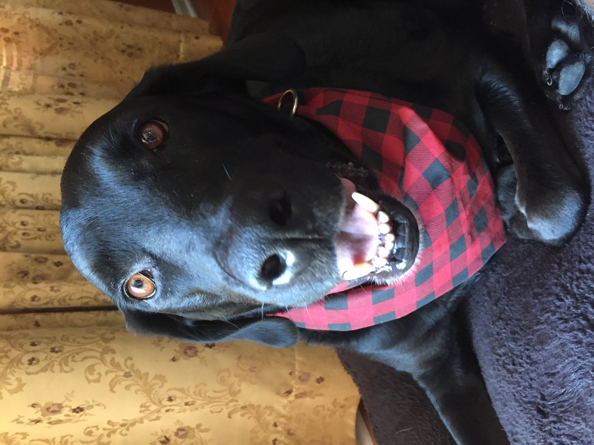
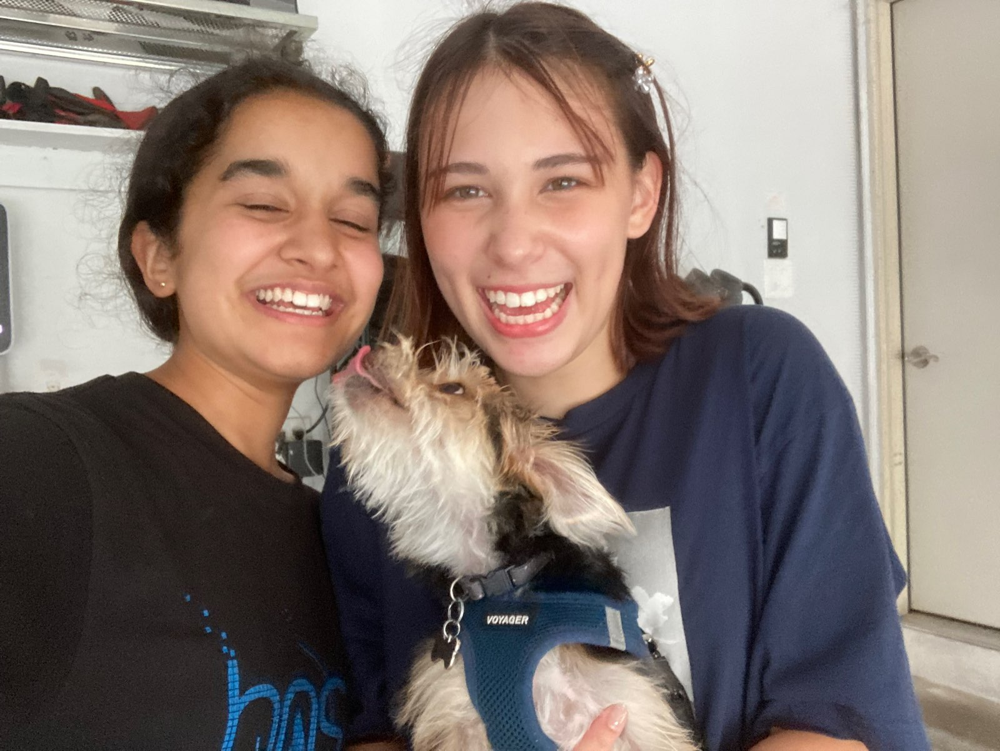
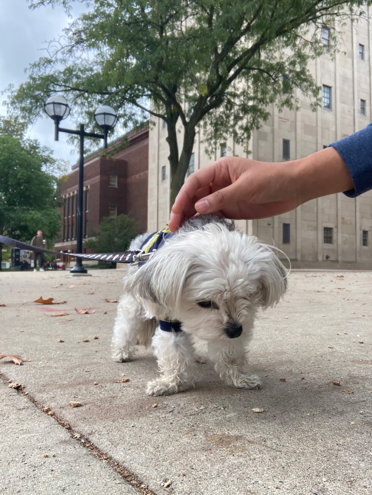

Ace Singh
Ace is the third child of the Kumar family, from Novi. He enjoys walking in his neighborhood, eating and bothering his sister. Ace has a grass allergy, but he has never let that stop him from playing outside. On his daily walks, he enjoys sniffing things he shouldn't and pulling on his leash. Ace has been known to have younger brother energy, but he claims that this is justifiable because he is, in fact, the youngest brother. Ace is literally my favorite dog ever.
Ace's YEA's
- Walks
- Playing outside
- Ankita's friends (specifically Julia)
Ace's NEA's
- Posing for pictures
- Being left behind on vacations
- Listening to Ankita
Yuzu
Yuzu is the Rennell's puppy. She understands English and Japanese and is quite the fashion icon. Yuzu enjoys (short) walks and occasionally posing for pictures. Yuzu is a yorkie-maltese mix, aka a morkie. You can find Yuzu on instagram, where her sisters run her account. Yuzu once peed on my foot, but I believe that it was a sign of her affection.
Sweetie
I met Sweetie once at an event in Ann Arbor. Sweetie is a therapy dog that is just as sweet as her name. When we met, she hardly the size of my hand. Her favorit activities are running off-leash, getting petted and being outside.